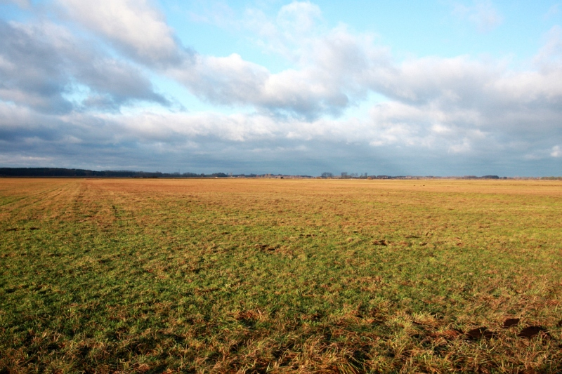
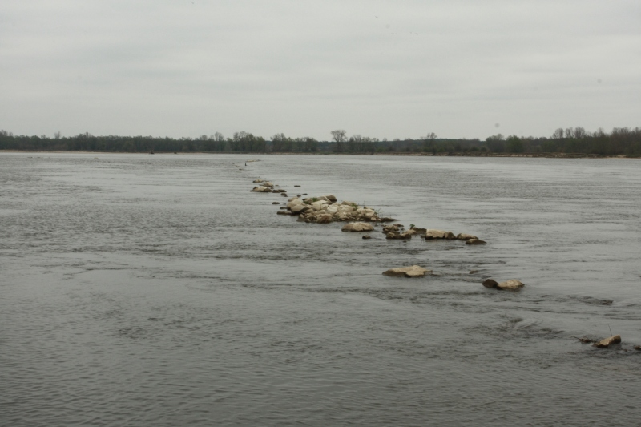
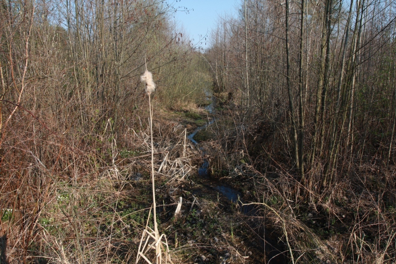
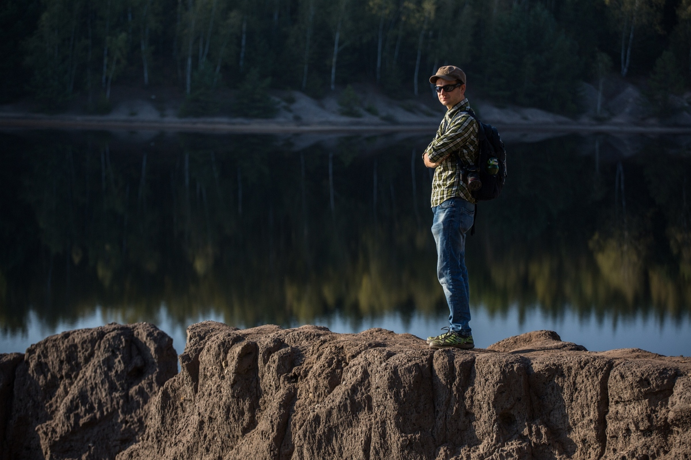

Według przeciętnego turystycznego opisu Polska to morze, jeziora, pasek gór i kilka
najciekawszych miast
pomiędzy. W literackim debiucie Adam Robiński zbacza z tych utartych szlaków i wydeptuje własne
ścieżki w
poszukiwaniu krajobrazowej egzotyki. Wędruje przez polską Saharę, płynie największą z dzikich
rzek, a
godzinę jazdy od Warszawy odnajduje Arktykę. Czyni to z pokorą dawnych krajoznawców: pieszo,
kajakiem, na
nartach. Ale najczęściej po prostu przystaje, żeby zobaczyć więcej: ślady tych, którzy przed
wiekami
wytyczali pierwsze drogi i znakowali szlaki, zdziczałe sady w miejscach wyludnionych wsi, drzewa
tak stare,
że mogłyby być tolkienowskimi entami.
W Hajstrach – niczym w niezrealizowanym dokumencie Wernera Herzoga –
krajobraz to nie lista miejsc, które
trzeba zobaczyć, ale suma zachwytów. Rzadko tak się pisze o Polsce. A jeszcze rzadziej się taką
Polskę
ogląda.
Fragmenty
Horror vacui

„(...) Szedłem wtedy od Porządzia na północ, do Grądów Polewnych, a potem według
wskazówek
zegara, po pętli. Wydeptanymi przez krowy ścieżkami albo po prostu przed siebie, na
szagę, na
skróty. Byłem ja i jeszcze jeden żywy punkt zawieszony kilkadziesiąt metrów nad
ziemią.
Ciemny
otok skrzydeł sugerował myszołowa. Ktoś powiedział mi potem, że włochaty, Buteo
lagopus,
który
przylatuje do nas na zimę z północy, często dynda tak w bezruchu, wypatrując obiadu
z
czworonożnej drobnicy. Ale ten mógł równie dobrze po prostu siłować się z wiatrem.
Był
za
wysoko, bym dostrzegł jego skoki, gołe lub opierzone. A po chwili zza moich pleców
wyleciał
drugi, równie enigmatyczny i już kompletnie nie wiedziałem, kto jest kim.
Ale teraz był środek zimy, koniec grudnia. Dopiero świtało. Heban nocy stawał się
granatem,
przechodził w stal i przez kilka stanów szarości, wreszcie osiągnął docelową spraną
biel.
Przywiozłem ze sobą biegówki. Chciałem być pionierem, a nie tylko zmoczyć skarpety.
Wyczekiwałem
tej śnieżycy od dawna, bo na Mazowszu od paru lat śniegu było wyraźnie mniej. Kiedy
więc
wreszcie zaczęło sypać jak należy, znalazłem się na Pulwach. (...)”
(fragment rozdziału „Horror
vacui”)
Potamokracja

„(...) Dwa lata po śmierci Giełżyńskiego z piwnicy mieszkania przy Sygietyńskiego
zabrałem
karton. Wyglądał jak każdy inny, na piętnaście półlitrówek, pewnie wyniesiony z
zaplecza
osiedlowego sklepu przed remontem. Na zamknięciu zielonym markerem napisane WISŁA.
Na
wierzchu
plaster kurzu. W środku parę książek, skserowane rozdziały z innych, maszynowe
brudnopisy
wywiadów. I teczki: „Powodzie”, „Dokumentacja”, „Rozmaitości do wykorzystania”.
Wszystko
uszeregowane według miast i regionów. Osobno Sandomierz, Włocławek, Nieszawa,
Kujawy.
Pokreślone, z marginesami zapisanymi, jakby papier oblazły mrówki. Razem pewnie z
dziesięć
kilogramów. (...)”
(fragmentu rozdziału „Potamokracja”)
Kanał

„(…) Przed sosnowym lasem bruk ustępował koleinom. Dwa kilometry dalej na zapisanej
cyrylicą
tablicy więcej było rdzy niż farby. Trzeba było wytężyć wzrok, żeby na górze odczytać
KOSZARY, a
na dole, ze strzałką w lewo, WILSZANKA 2. Tu domów było kilkanaście, a ich kolory dawno
wyblakły. Wieś kończyła się skrzyżowaniem z kapliczką. Obok kilkanaście osób grabiło i
zamiatało
zeszłoroczne liście i trawę w niewielkie kupki, które potem puszczane były z dymem. Na
krzyżówce
nie mieliśmy wielkiego wyboru: w lewo Bug, prosto zielona granica z Białorusią. Więc w
prawo.
Stanęliśmy na mostku kilkadziesiąt metrów dalej. Po jego obu stronach w suchej gęstwinie
widać
było wodę. Wyglądała jak makieta większej nizinnej rzeki. Płynęła, meandrowała, a
wysokie
źdźbła
pochylały się nad nią niczym łęgowe wierzby. Nie dało się iść wzdłuż niej ani w jedną,
ani w
drugą stronę. Trzeba było zadowolić się tą strużką, bo tu wreszcie miała nazwę. Kanał
imienia
Prezydenta Mościckiego. (...)”
Warszawa (Moda na Czytanie, ul. Bracka 25), godz.
19
Jako prowadzący rozmowę z
Lechosławem Herzem wokół jego książki „Świsty i pomruki. Sceny tatrzańskie”
9 listopada 2017
Warszawa (Moda na Czytanie, ul. Bracka 25), godz.
19
Rozmowę poprowadzi Stanisław Łubieński
14 listopada 2017
Kraków (Bonobo, Mały Rynek 4), godz. 19
Kontakt w sprawie organizacji spotkań autorskich lub prowadzenia spotkań z innymi
autorami:
wwwadamrobinski@gmail.com
O autorze

fot. Darek Golik
ur. 1982
Dziennikarz wolny strzelec, prozaik. Jego literacki debiut „Hajstry. Krajobraz bocznych dróg” ukazał się
nakładem wydawnictwa Czarne (premiera 25 października 2017).
Stały współpracownik „Tygodnika Powszechnego” i „National Geographic Traveler”.
Były redaktor i dziennikarz miesięcznika „National Geographic Polska”, wcześniej zastępca kierownika
redakcji serwisów informacyjnych „Rzeczpospolitej” oraz redaktor serwisu internetowego „Życia Warszawy”.
Publikował w „Rzeczpospolitej”, „Plusie Minusie”, „Kaleidoscope”, „Inspire”, „Echach leśnych”,
„Przeglądzie”, serwisie gazeta.pl. Ma również na koncie współpracę z Mazowieckim Centrum Kultury i
Sztuki,
wydawnictwami Czarne oraz Nasza Księgarnia.
wwwadamrobinski@gmail.com
Kontakt w sprawie zleceń dziennikarskich i literackich, spotkań autorskich
i innej współpracy